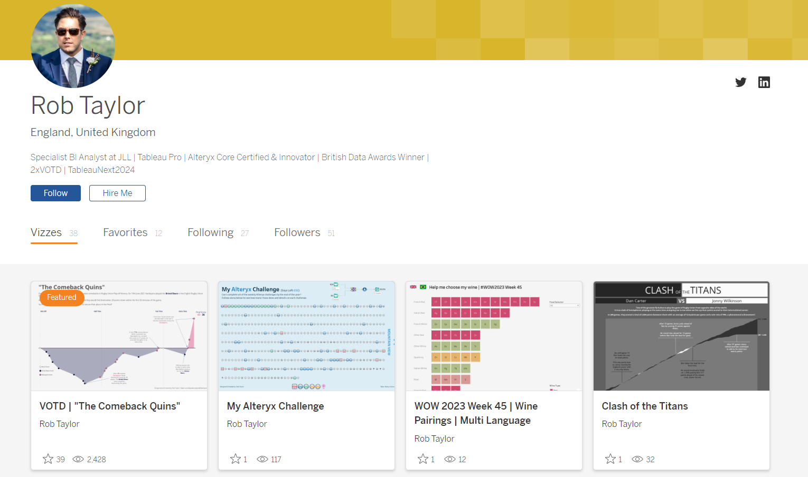
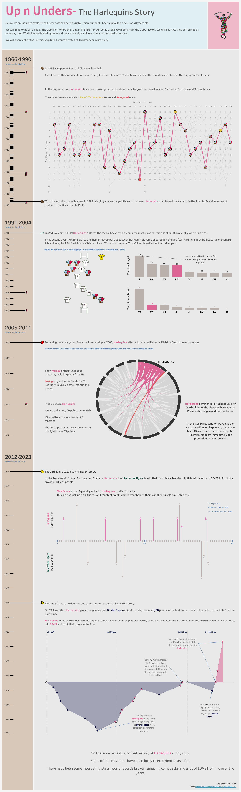
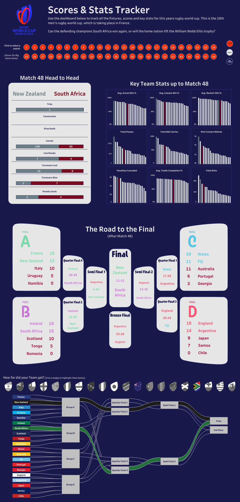
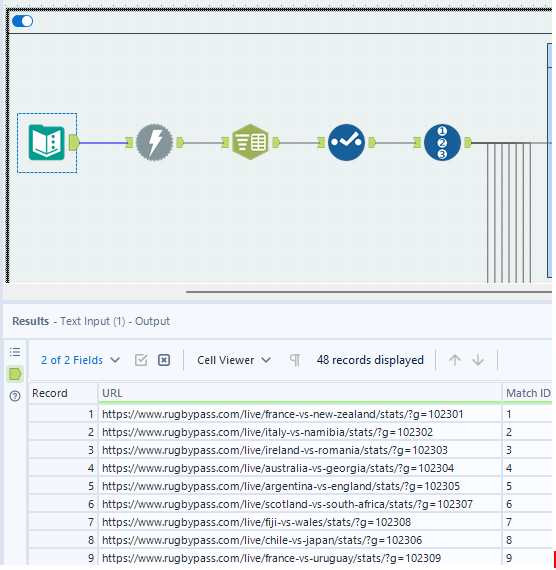
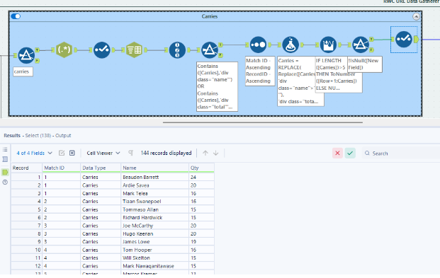
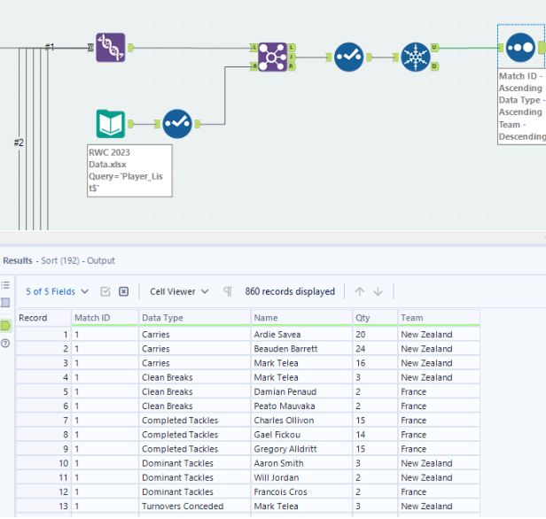
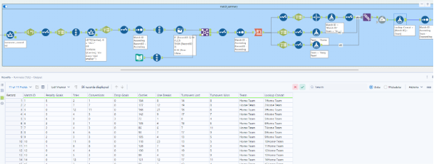
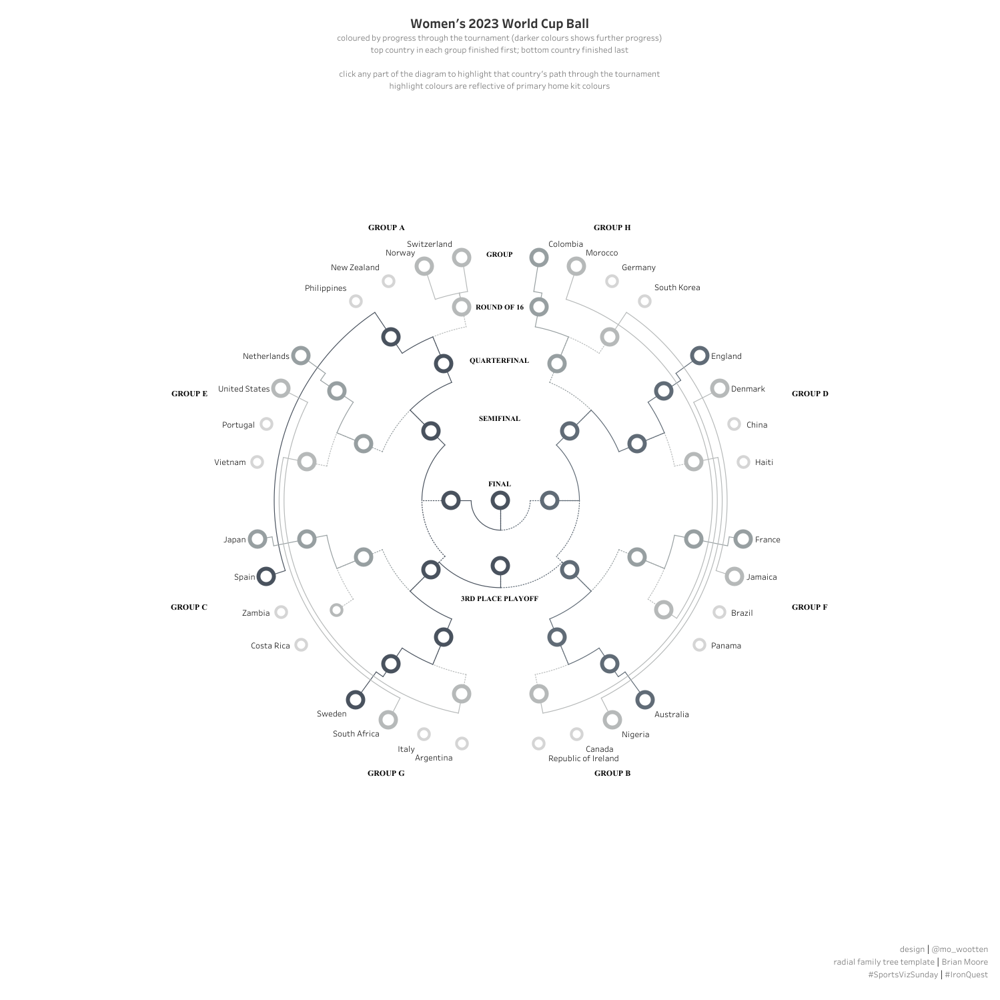
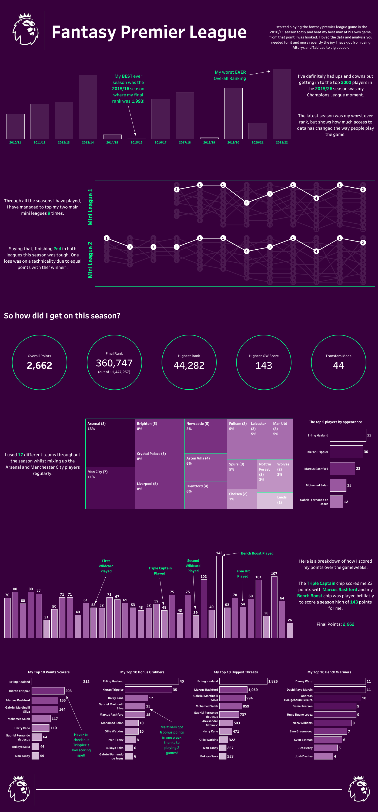
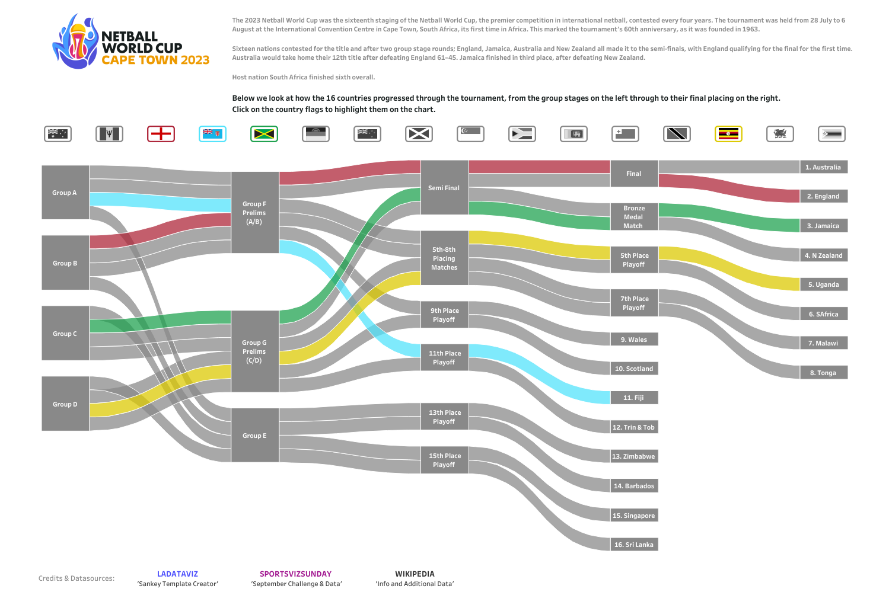

Hi all,
We have another guest blog this week. Rob Taylor joins to chat all things sports, with a focus on some rugby data. Hope you enjoy the convo!

CJ: Rob, thanks for joining. I am so pleased to have a #SportsVizSunday regular join the blog today. For those who don’t know, do you want to share a little bit about your journey at LNER & JLL, and where your interest in data started?RT: Thanks CJ, it’s a real pleasure to be invited on to the blog so thanks for having me! I’ve always been interested in numbers, I’m a very methodical person and love problem solving, numbers just make sense to me. But I also have a real creative passion too. In a former life I used to paint pop art style paintings of high profile rugby players that would be sold off at charity auctions.I started my analytics career over 16 years ago in excel, automating data processes with macros and VBA. Being able to speed processes up and get to answers quickly was fantastic and I loved doing it. During my time with London North Eastern Railway, LNER, I was instrumental in how they transformed and used their data. We got Tableau and Alteryx and that’s when I knew what I wanted to do and my career path really took off. Building out all sorts of ETL processes to manipulate data so that we could use it in Tableau ticked the methodical part of my brain, then creating really interactive and insightful dashboards the business could use ticked the creative side.About a year ago a colleague, Danny Bradley, introduced me to the datafam and I realised there was this whole bigger world outside of LNER. I was amazed what other people were building and what they could do with the tool. I wanted to be part of that. My recent move to JLL gave me the opportunity to work for a big business and stretch my skills, whilst also getting to work alongside so many of the datafam community I’d come across in the last year. There are so many opportunities for learning and skill growth I can’t wait to see where it takes me.CJ: You are a big rugby fan. I particularly remember your Ironviz entry on the love for Harlequins, as well as a shortform visual on the comeback quins. I particularly love the Comeback quins visual way of showcasing the shortfall of 28 points to then going all square before the final whistle. Can you tell us a little more why you felt this was the best representation of the match data?

RT: Yeah rugby has been part of my life since I was 6 or 7. I have played it since then and watch as much as my wife lets me!Like most sport, in rugby not all games are thrillers, however with this one in particular the way the game panned out it was such a gripping game. After 29 minutes and being 28 points down most people would think it was a done deal. For me that was when the story really started. That was why I thought this chart worked so well. Using the horizontal divider for each team was a conscious decision, which I thought really highlighted how big the points gap got. The beauty of doing it this way and also colour coding the areas also gave me the opportunity to show just how much of the match Bristol were ahead for. There was only a short period of time in the initial 80 minutes where Bristol weren’t winning, 3 minutes!! Then again in the 20 minutes of extra time Bristol led for 16 before Harlequins clinched the win. I can only imagine what the atmosphere change must have been like in that stadium between the two sets of fans and that was what I was trying to represent.CJ: For other rugby fans, what are your go-to data sources? How much data prep would you have to put into a piece such as your scores and stats tracker that received VOTD? Was this something you automated as the tournament was on?

RT: For me it can be anything from a properly collated data source that I find like rugby.statbunker.com to just websites that I come across that are based on tournaments or competitions. This was particularly the case with the World Cup one. I came across a website that had all the information that I needed and was almost updated in real time.This for me is where the data prep comes in and my love of problem solving. My go to tool is Alteryx. From the first time I used it I was blown away with its capabilities and ease of use. Much like Tableau there is a great community out there where much cleverer people than me have done some amazing things. I used it to build out a workflow that would scrape all the different parts of the website I needed and collate it all together in a friendly Tableau building format. The initial build took a bit of time but it was on purpose so that it was future proof. The beauty of this was that as soon as each game ended I could run my workflow and update my dataset and refresh my dashboard. I think it only needed a few small tweaks as the tournament went on because of the initial time investment.I watched a lot of the games and the data geek in me couldn’t help running the workflow straight after to see what the stats showed and how it compared to how I saw the game.Here are a few snippets of the workflow I used. The first part involves me getting the URL’s for all the individual games. This was initially scraped from the landing page on the website and combined in to a list so I was future proofed for when new games happened.

Once I had those I could put them through the download tool and start parsing out just the data I wanted to visualise. I did that mainly using the Parse tool and text to columns, then a few different calculations to focus on the number I wanted to get. In this case how many carries each player had in each game.

This was repeated for all the different metrics and then unioned back together with a Player details list I also scraped to combine all the data in one file.

Finally I did something similar with the actual Match data to combine it all together in one easy to use file so I could plot the game info on the dashboard.
CJ: Rob has kindly shared the workflow with us, and is downloadable at the top of the page from the git repository.
CJ: Is there anyone in the community that particularly inspires your work? Where do you look to for sports analytics inspiration?RT: You mentioned #SportsVizSunday at the start, which I found early on and loved it. There are so many great people contributing there with their own different styles about lots of different sports. Bo McCready’s Vizzes always looks like a piece of art which I love, Mo Wootten’s World Cup family tree really made me want to reverse engineer it and work out how he did it and I also love Ben Norland’s style of Vizzes. I’ve definitely recreated quite a few of the things he has done. His techniques are so unique. Outside of sport I love movies too so Zach Bowders Vizzes are right up my street. I’ve also spent a lot of time looking at #IronViz champion Chris Westlakes stuff and also Ant Pulley, I still don’t know how he makes some of his dashboards do what they do!There are so many great people out there though I find it hard to narrow it down. I actually made a Christmas advent calendar last year too. That was a little nod to a lot of the people who had inspired me to get better.CJ: You have two wonderful FPL visuals, one on draft selectionsanother based on your own data. For someone looking to do their own analysis what are the best steps to being able to create analysis to the detail level you’ve gone through?

RT: Yeah FPL is a great competition. I only really got into it to try and beat my really keen football friends. The beauty of that was that I wasn’t swayed by any underlying loyalties and was happy picking players they sometimes wouldn’t purely on what the data was telling me.It’s a great resource for data. They have huge amounts of data and a load of API’s to go with it too. This makes it super easy to pull your own data. On top of that there are Alteryx workflows already built on the community for you to use with just a few simple changes.Once you have all that data the hardest bit is trying to decide what stats you want to use. I also did a viz on how our current draft league was going, but it was a bit biased to be honest and I built it to make myself look better than I was actually doing at the time, mostly to wind up my mates.CJ: Your Netball visual with the Sankey is beautiful in design. Thank you for entering that #SportsVizSunday challenge. Can you talk us through the design choices? Particularly the choice of flag and use of gray color? What is it that you wanted the user to understand through it?

RT: Thanks, yeah I was particularly pleased with how that one turned out and the challenge was a fun way to use a dataset I probably wouldn’t have picked.Part of the design was me wanting to use two things I hadn’t done before; multi select parameters and a Sankey. Tristan Guillevin’s amazing tool helped me get the basic template without having to do all the painful maths. From there I then added a load of functionality with the aim of allowing the users to select any countries they were interested in. The grey scale/colour selected for each country would then really make their progress through the tournament pop out to the viewer. The choice of flags as the selection tool felt almost natural but also made it easy to get them all above the Sankey in a nice uniformed format, keeping my inner OCD happy.CJ round-up:
So pleased to have Rob join this week. I feel Rob's portfolio has such breadth in design, sports and also tools to help with the data transformation. I hope that passion has come across in todays conversation and once again thank you to Rob for sharing the finer details around creating an automated solution for the rugby world cup data.
LOGGING OFF,
CJ